U 1. vježbi bilo je potrebno napraviti svoj vlastiti font u programu Fontographer, kreirati slova svoga imena i prezimena te znakove hrvatske abecede: Š,š,Č,č,Ć,ć,Đ,đ,Ž,ž.
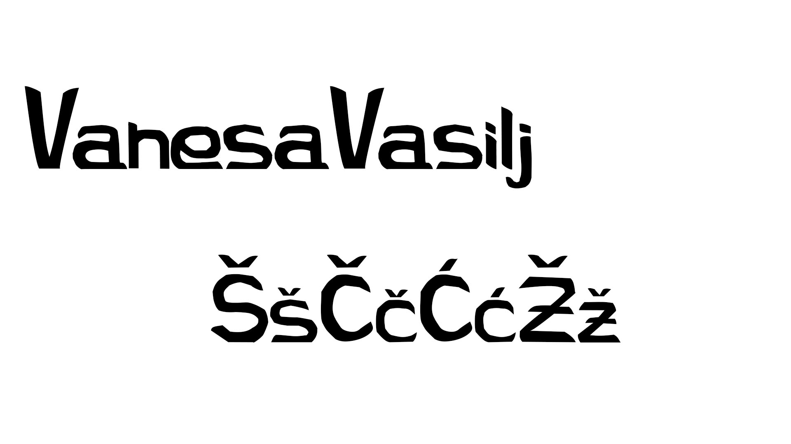U drugoj vježbi smo crtali Bezierove krivulje unutar naših inicijala u Illustratoru.
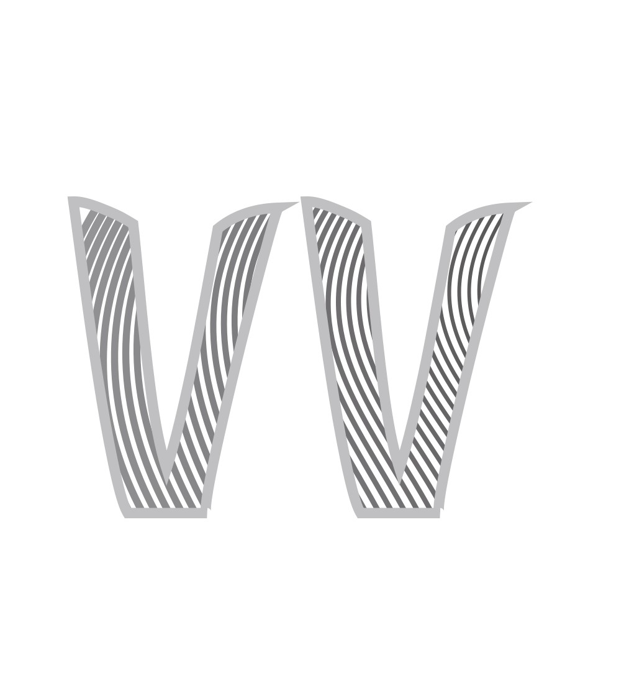U trećoj vježbi zadatak je bila vektorska grafika. Crtanje oblika prema predlošku te definiranje SWATCH boja u Illustratoru.
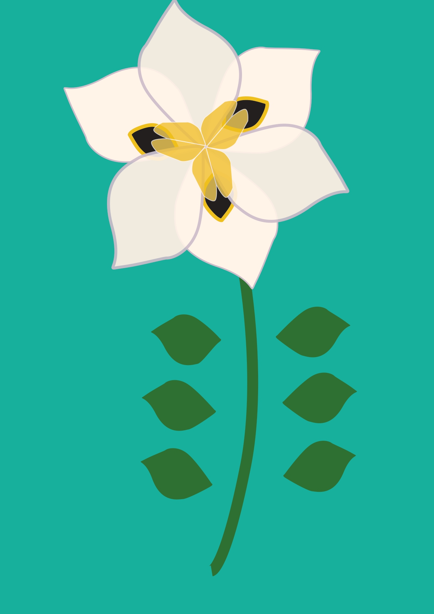 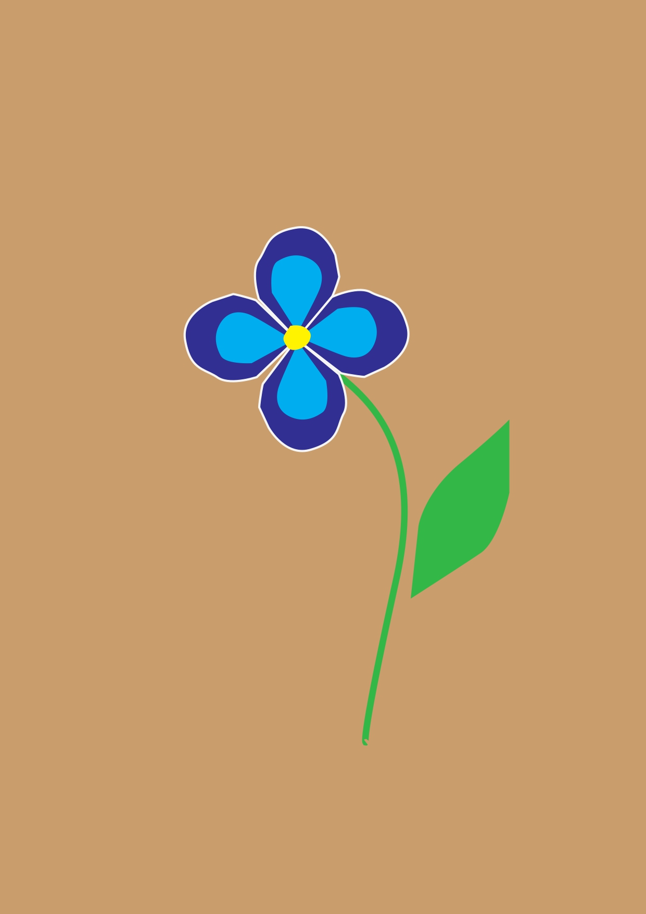U vježbi 4. zadatak je bio kreirati vlastiti složeni objekt u kojem smo korisitili tehnike spajanja i izrezivanja objekata i primijenili različite vrste gradijenata.
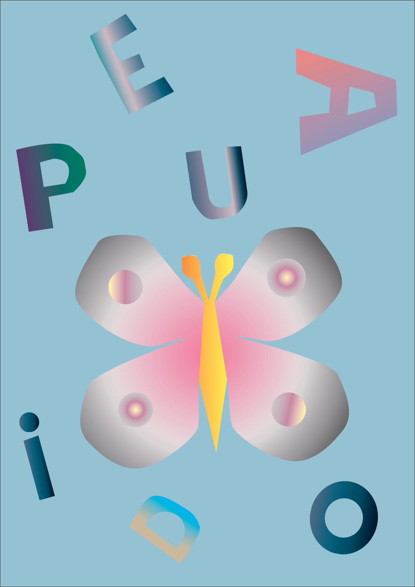 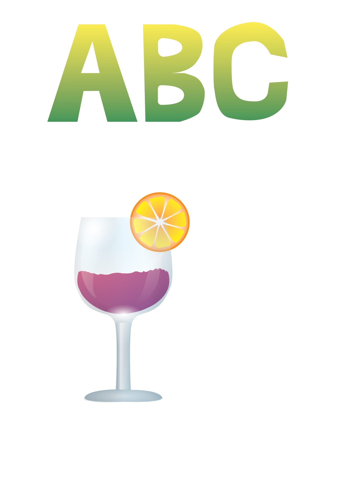U projektnom zadatku bilo je zadano kreirati vlastiti font sa nekoliko slovnih znakova, ilustrirati odabranu temu iz flore i/ili faune podmorja prema zadanim elementima.
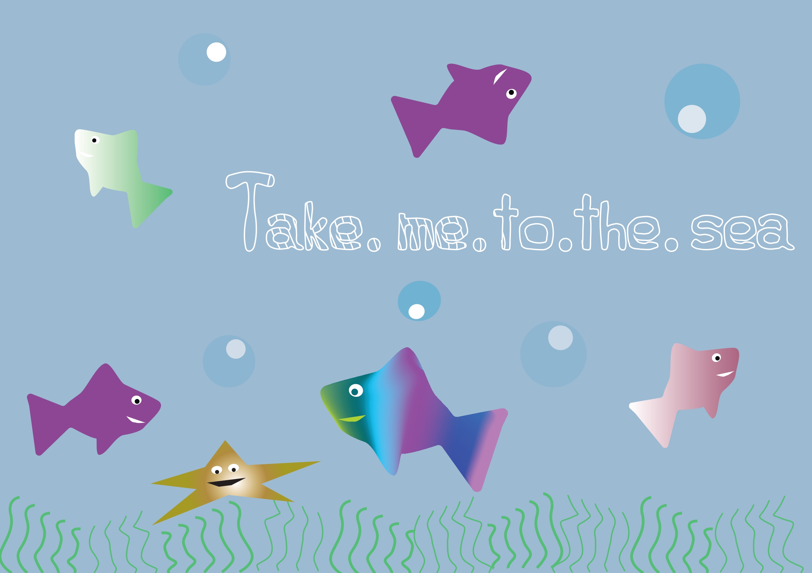U petoj vježbi morali smo retuširati ove dvije fotografije u Photoshopu:
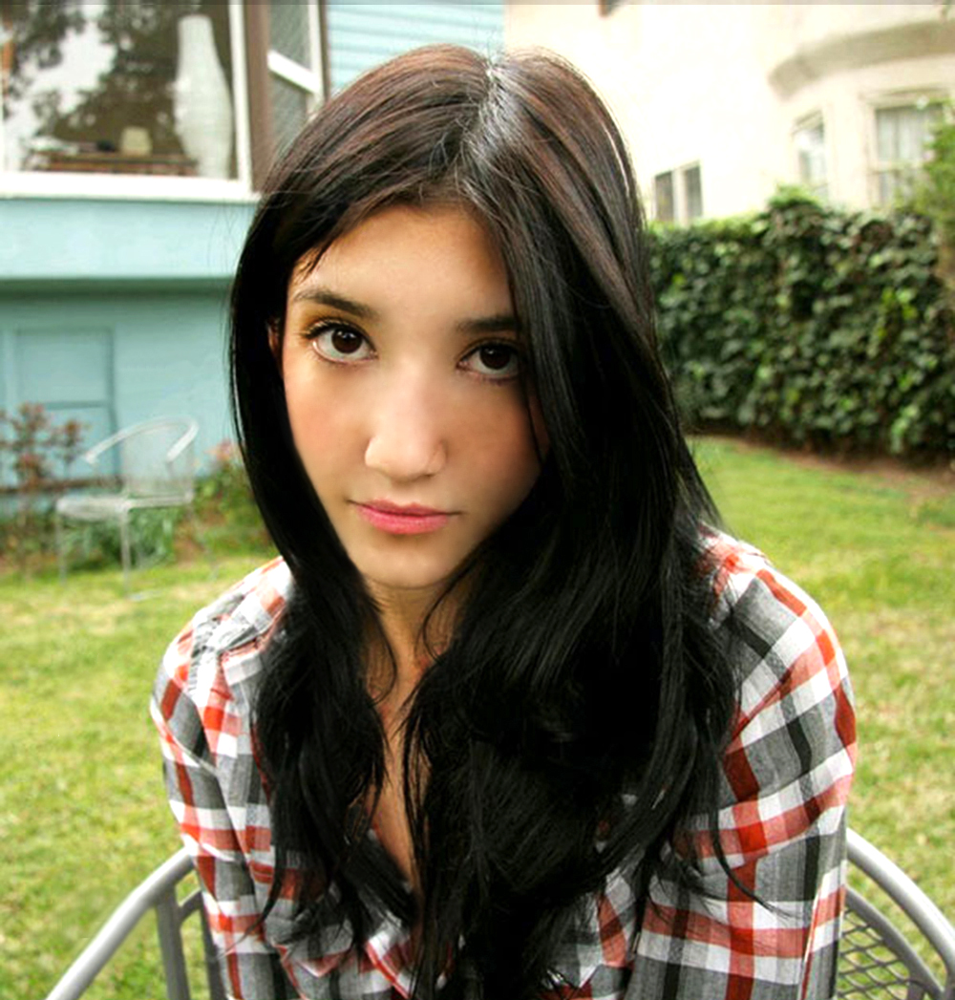 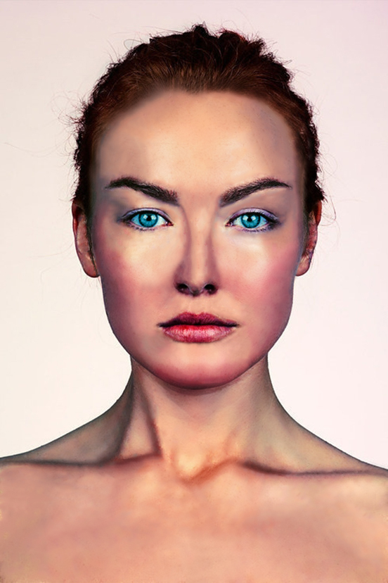U 6. vježbi bavili smo se koloriranjem slike.
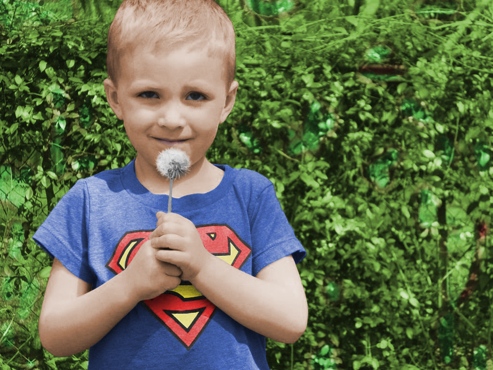 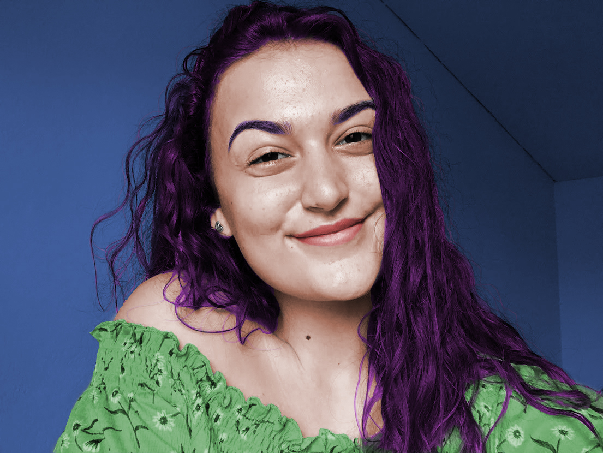 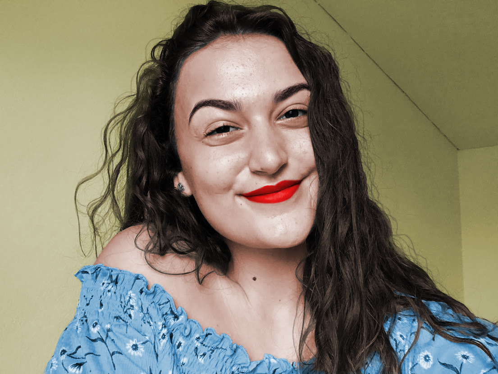U vježbi 7. radili smo fotomontažu u Photoshopu.
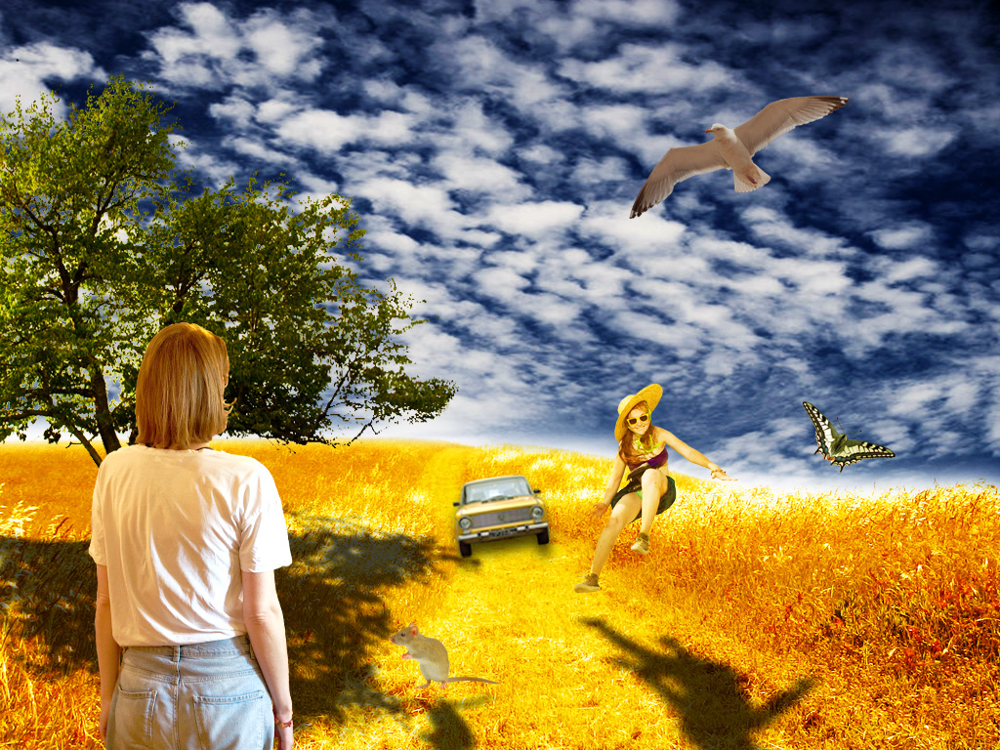Za 2. projektni zadatak morali smo kreirati sliku u Adobe Photoshopu kao kompoziciju više fotografija koristeći tehnike retuširanja, fotomontaže i koloriranja.
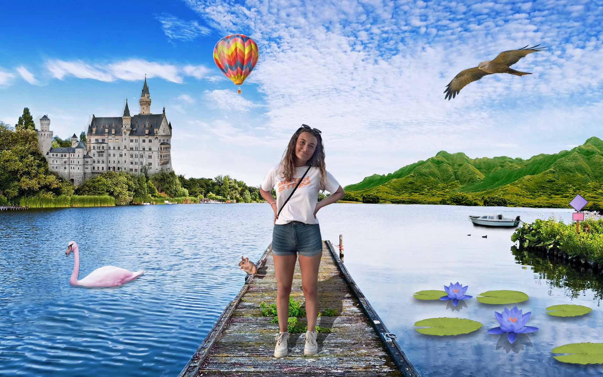U osmoj vježbi izrađivali smo kinemagraf (GIF).

U 9. vježbi uređivali smo video, zvuk i dodavali smo različite efekte videu.
I u zadnjoj 10. vježbi bavili smo se stvaranjem web sadržaja (HTML/CSS)
Moja prva stranica